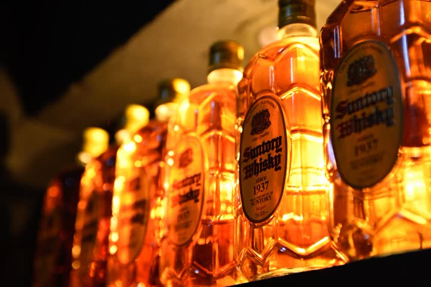
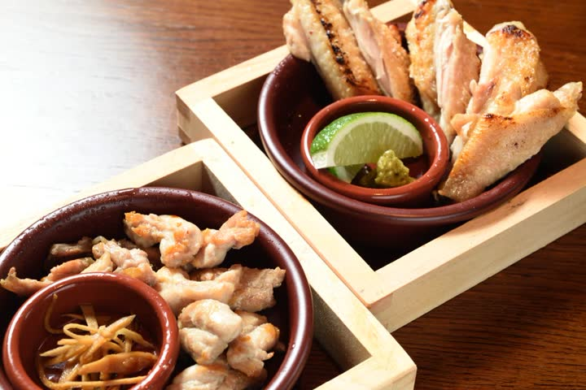
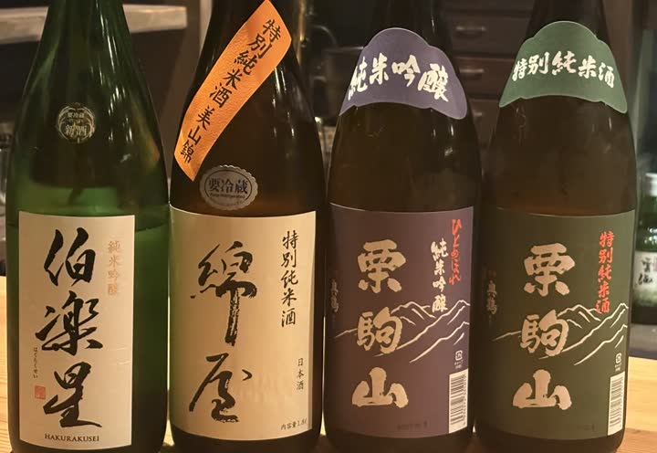
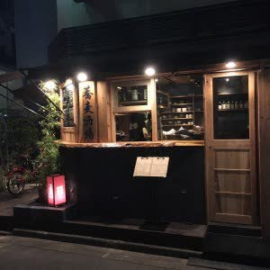

Yushima, Tokyo · Four sakaba
角を曲がると、
懐かしい夜が
待っている。
湯島天神の坂を下りた路地に、四つの小さな酒場がある。角地のバーから始まった、ひとつの家族の話。
 BAR KADOYA, YUSHIMA 3-45-3
BAR KADOYA, YUSHIMA 3-45-3湯島天神の坂を下りた路地に、四つの小さな酒場がある。角地のバーから始まった、ひとつの家族の話。
BAR KADOYA, YUSHIMA 3-45-3
湯島3丁目45番地。春日通りから一本入った角に、看板の小さなバーがある。店の名は、そのまま「カドヤ」。扉を開けると、落とした照明の下にレンガと木のカウンターが伸びていて、初めて来たはずなのに、どこかで来たことがあるような気がする。
名物は、角瓶のハイボールだ。山崎バーボン樽原酒をキーモルトにした甘やかな香りと厚みのあるコク。それを、冷凍庫でキンキンに冷やした銅のマグカップに注ぐ。薄い縁が唇に触れた瞬間、炭酸の刺激と香りが立ち上がる。
食べるものも、バーにしてはしっかりしている。じっくり煮込んだ「カドヤの煮込」、醤油に漬けたチーズ、そして喫茶店のそれを思い出す「昭和のナポリタン」。飲んだ〆にナポリタンを頼む客が、この店には多い。

角瓶、1937年生まれ。
店主の村山は、宮城県北部・栗原の生まれだ。栗駒山のふもとに田んぼが広がり、昼夜の寒暖差と山の伏流水が、粘りと甘みのある米を育てる土地。その米と野菜を、農家から直接、湯島の路地裏に運んでくる。
「くりはら屋」のお通しは、小さな鍋だ。宮城の青菜をどっさり入れた「草鍋」。出汁で野菜をしゃぶしゃぶし、豚肉を足し、酒を注ぐ。栗駒山、萩の鶴、綿屋。栗原の三つの蔵の酒が、同じ土地の野菜と出会う。
焼鳥は一本ずつ丁寧に焼く。〆は栗原の米の玉子焼。木目の調度品に囲まれた1階と2階は、少人数にも宴会にも向いている。






蕎麦屋で一杯、は江戸の昔からの楽しみだ。それを酒場のかたちにしたのが「蕎麦酒場 角ヤ」。湯島天神の男坂を下りた路地の「湯島天神」店と、駅を出てすぐ、テラス席のある「春日テラス」店。
ハイボールや日本酒を片手に、揚げ物や小皿をつまむ。そして最後は、手繰る蕎麦で〆る。飲んだあとの蕎麦は格別だ。あっさりのせいろから、ピリ辛の坦々出汁まで、その日の気分で選べばいい。

蕎麦酒場 角ヤ 湯島天神、夜。
※インタビューはレイアウト確認用の仮の文章です。実際の取材内容に差し替えてください。